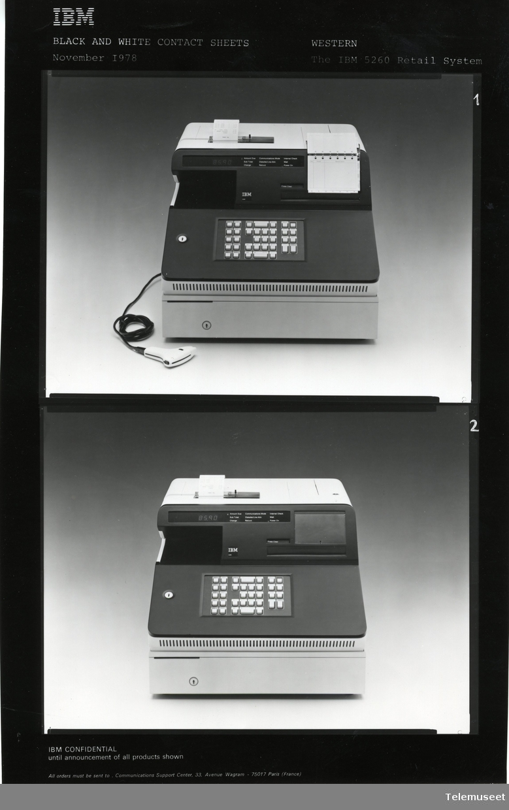

The Register That Ran on Paper and Clockwork
IBM's 1979 point-of-sale terminal had no screen and no software metaphor: a spinning drum of printed captions guided the cashier through every sale, and the machine was reprogrammed by draping paper over its buttons. Software UI rendered as hardware — the mechanical counterpoint to touch-on-glass.

Walk into a toy shop, a record store, a corner grocery in 1979 and stand behind the counter for a minute. The register in front of you is an IBM 5265 — and it is about to show you what a user interface looked like before anyone had a word for it.
There is no screen. There is no cursor, no menu, no metaphor. What there is, inside the cash drawer, is a drum: a cylinder of printed captions that slowly rotates behind a small window. As you step through a transaction the drum turns, and the caption visible in the window tells you what to do next — ring the item, enter the amount, total, tender. You could swap in a different roll of captions, or apply printed stickers to customize a step. The machine walks you through the sale the way a clockwork figure walks through a story. Software UI, rendered as a spinning cylinder.
Then there is the reprogramming. The 5265 ran transactions by itself — no host, no store-loop — writing each sale to a removable 8-inch floppy disk you could carry to a back-office machine. And to change what the register did, you did not load anything. You draped a printed paper keyboard overlay across the keys. The keypad was designed with deliberately awkward chicklet keys, so that when you laid a sheet of paper printed with new labels over the whole face of the machine, what you got was a brand-new register. New buttons, new meanings, right on the spot, entirely standalone. The program was a piece of paper.
I keep coming back to that. A computer that is reprogrammed by laying paper over its buttons, and guided through operation by a spinning drum of printed captions — this is an interface where the state, the instructions, and the help text all live in physical printed things. The pixels had not been invented yet for this object; the software existed as ink and rotation.
The museum loves this one for how cleanly it closes a loop. The museum's other retail terminal is ViewTouch, Gene Mosher's 1986 Atari ST register where the cashier taps software-defined buttons on glass. Same job, opposite philosophy, seven years apart. ViewTouch made the register into a program: on-screen buttons that could change meaning with a recompile, an order reduced to a handful of fingertip taps on a capacitive overlay. The 5265 kept the register a machine you had to rearrange physically — paper over the keys, sticker on the drum. One direction led to the touchscreen POS in every café; the other led to the dumpster of interface history. Both are real, and both are in the collection. The register before the screen, and the screen that ate the register.
The pedagogy of the thing is what stays with me. On a touchscreen, the machine can render any instruction at any moment — a prompt is free. On a 5265, prompting cost a sticker and a revolution of a drum, so the machine's guidance had to be designed: someone decided, on paper, what a clerk needed to be told at each step, and the answer was physically cut and mounted. An interface constrained to paper is an interface forced to be honest about what it is saying. There's a discipline in that.
And the counterpoint with ViewTouch isn't just stylistic — it is the whole arc of the era. Software-defined hardware was arriving everywhere, and the 5265 sat right at the seam, a paid-in-cash holdout where the "programming" was a paper cutout and the "prompt" was a rotating drum. The auto industry, the music industry, the kitchen — the museum has been recording where software was eating machines for a while now, from the RCA Studio II betting on buttons to the Tektronix 7854 bolting a keyboard onto a waveform. The 5265 is the retail register's chapter: the last cash register that lived entirely in the physical before the screen came along and made everything ink-on-glass again.
IBM announced the 5260 Retail System on 8 January 1979 for small retailers who could not justify a mainframe-connected store. It ran standalone, or clustered, or talked Bisync to a System/34. It listed for $3,850 and shipped that September. A first-hand operator account — a kid running one at a department store — remembers that the register taught him the job, drum-turning each step, and that laying a new paper overlay over the keys made the whole machine a different tool for the next shift's task. Paper as software, one sheet at a time.
I love machines that made you rearrange the world to talk to them. The 5265 is one of the best: a computer whose every instruction lived on a spinning drum and a printed sheet, rendered in the most honest display medium of all — something you could hold in your hand.